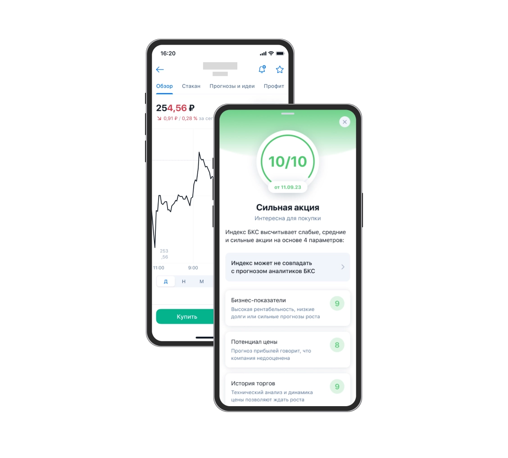
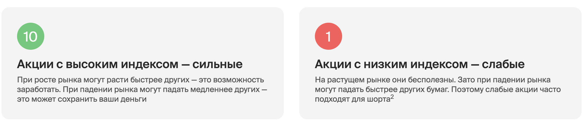
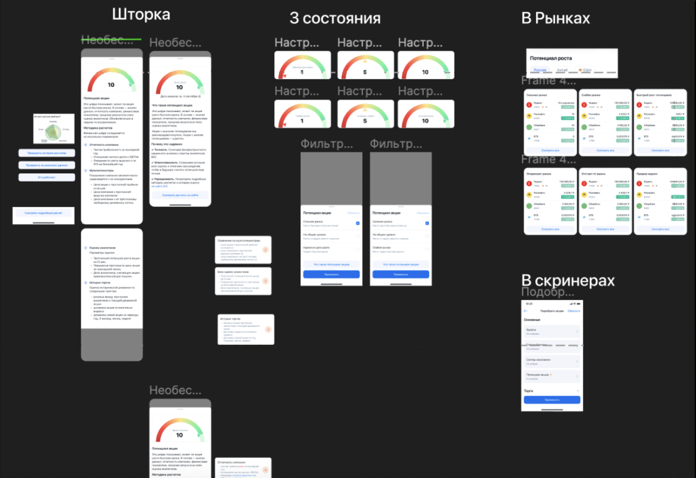
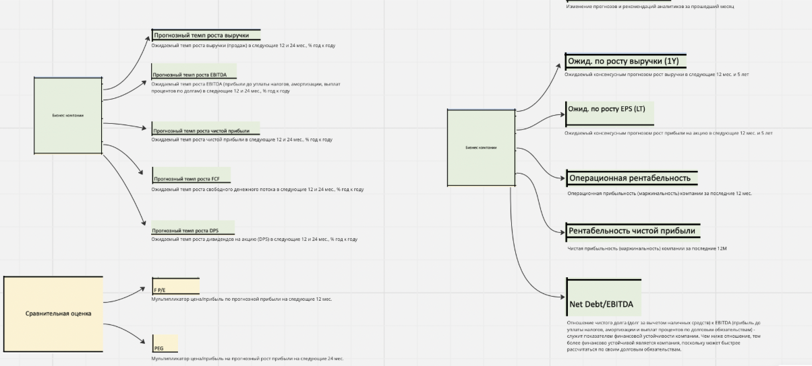
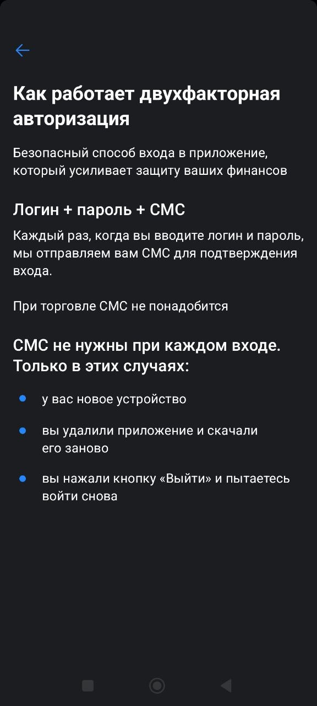
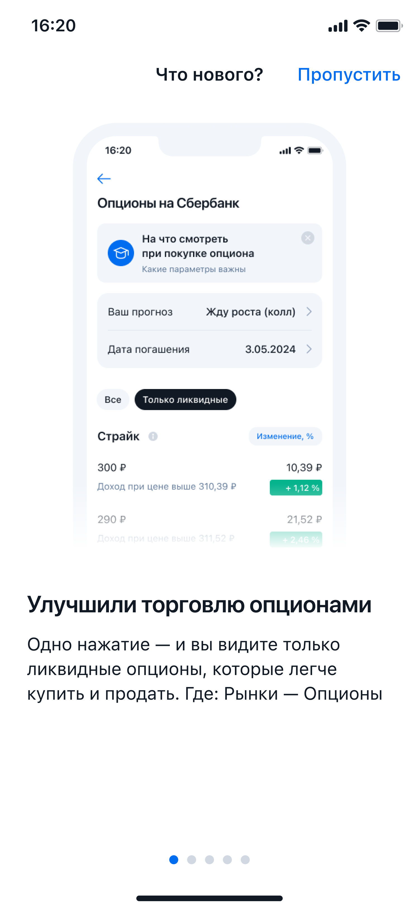

Алексей Храпов
В начале — кейсы про проектирование интерфейсов и работу с заказчиками,
в конце — мини-кейсы про то, как я пишу отдельные экраны
Кейсы: как я мыслю при работе над задачами
Превратил сложную финансовую модель в интерфейс, который помещается на экран телефона


Контекст. Пользователи держали в портфеле одни и те же акции и мало интересовались другими предложениями → низкая торговая активность → недополученная выручка.
Интервью с пользователями показали, что люди рассматривали покупку новых акций, но отказывались от нее. Барьеры: беспокойство за возможные убытки, нежелание тратить время на самостоятельный анализ ценных бумаг.
Задача. Для снижения барьеров продакт предложил команде создать инструмент, который позволил бы с одного взгляда оценить перспективы ценной бумаги.
Что я сделал. Вместе с командой спроектировал интерфейс с нуля. Придумал, как объяснить сложную финансовую модель, не потеряв точность и не создав ложных обещаний. В подробностях рассказываю ниже.
Результат. За 2 месяца после запуска пользователи инструмента стали:
- чаще посещать карточки акций (+19% просмотров)
- чаще создавать торговые заявки (+13% к конверсии из карточек акций)
- держать больше разных акций в портфеле (+14%)
Как именно я работал
- Обсудил с продактом и дизайнером ценность для пользователей, корнер-кейсы, возможные проблемы, измерение результата — и почему идея может не сработать.
Параллельно создал варианты названия и проверил опросом в приложении.
- Договорился с дизайнером о процессе совместной работы над макетами и текстами. В том числе предлагал изменения дизайна и структуры экранов.
Параллельно взял на себя работу с финансовым аналитиком — автором механики, которая лежала в основе фичи. Моей задачей было уместить в мобильный интерфейс финансовую модель размером в полтора экрана Excel.
- Проверил реакцию пользователей на первый вариант интерфейса с помощью опроса в приложении.
- Согласовал экраны с юристами и отдал в разработку.
- Залидировал создание лендинга в вебе «под ключ»: помимо структуры и текстов, взял на себя взаимодействие с дизайнером веб-команды, еще одно взаимодействие с финансовыми аналитиками и снова согласование с юристами.


Как именно я прорабатывал сценарий и материалы аналитиков
Сначала про сценарий. На начальном этапе я не пытался добиться идеальных формулировок. Следую железному правилу: сначала понимание, потом текст.
- Какая информация должна быть на главном экране фичи?
- Как мы будем встраиваться в текущие экраны приложения?
- Где информация статичная, а где динамичная?
Когда понимание возникло, любые точечные изменения занимали смешное время.


Теперь про финансовых аналитиков. Чтобы уместить в мобильный интерфейс финансовую модель размером в полтора экрана Excel, я начал с сортировки и группировки информации в Miro:


Выделил и согласовал 4 параметра, в каждом 3 состояния. Затем пошла детальная проработка с классическими противоречиями по ТРИЗ:
- Каждое состояние должно быть конкретным настолько, чтобы пользователи поняли суть показателя
- Каждое состояние должно универсально сочетаться с другими — математически возможна 81 уникальная комбинация
Решение:
- Дать каждой группе параметров короткое название
- Подробное описание спрятать в раскрывашку для любопытных
- Еще более подробное описание вынести на лендинг и дать на него ссылку
В итоге интерфейс понятен при беглом взгляде, но оставляет возможность углубиться в дебри финансовой модели — опытные инвесторы это ценят.


Пример, как я быстро проверил формулировку
Команда считала, что пользователей привлечет формулировка «Эти акции растут быстрее рынка». Я провел коридорку на неопытных пользователях и увидел, что они не понимают, что такое «рост быстрее рынка». В финальном варианте договорились написать «Интересно для покупки».
Формулировку «быстрее рынка» я оставил на лендинге в вебе — но только рядом с графиком, который доносит это понятие лучше, чем текст.
Спроектировал логику текстов для 36+ продуктов
Контекст. В приложении нельзя было посмотреть информацию о выплатах по структурным продуктам. Чтобы узнать, когда будут деньги и от чего зависит выплата, клиент должен был писать в поддержку. Время было ограничено: ресурс разработчика выделили на 1 квартал.
Задача. Создать текстовые шаблоны для разных типов продуктов с учетом технических ограничений. Сделать логику гибкой, чтобы новые типы продуктов можно было добавлять без дорогостоящих доработок.
Результат. Клиенты начали получать информацию напрямую из приложения. Нагрузка на поддержку снизилась, CSI структурных продуктов по итогам первого квартала после внедрения вырос, но точные цифры у меня не сохранились.
Как работал
Мне передали задачу, когда сроки уже поджимали, а заказчик был слегка раздражен: прошло несколько циклов согласований, но общая логика не вырисовывалась. В макетах лежало больше 36 структурных продуктов с разными механиками выплат.
Я пролистал макеты и понял, что к формулировкам переходить рано. Прежде всего нужно было понять, как формируется экран: какие данные приходят с бэка, какие есть на фронте, где есть место для гибкости, а где прибито гвоздями.
Когда-то я увлекался программированием, поэтому смотреть на экран «рентгеновским зрением разработчика» для меня привычно.

Разобравшись с основой, я начал группировать формулировки:

Таким образом, прежде чем перейти к финальным формулировкам, я сначала согласовал структуры и технические требования. По формулировкам прошлись уже в конце, после утверждения технической части.
Пример микрорешения
Я спросил заказчика, будет ли поддерживаться перевод строки. Оказалось, что в планах такого нет. Я показал на паре сложных примеров, насколько сильно разбивка по строкам упрощает чтение. Доработку утвердили.
Обеспечил качество и сократил время подготовки текстов для бота поддержки: 1,5 мес. → 1 неделя
Регулярно работал с чат-ботом — редактировал тексты, написанные сотрудниками службы поддержки. В текстах были сложные формулировки, обилие терминов. Несмотря на редактуру, тексты быстро возвращались в исходное состояние из-за постоянных срочных доработок без участия редактора.
Выстроил процесс, чтобы обеспечить качество, а заодно сократил время подготовки текстов с 1,5 месяцев до 1 недели.
- Разбил подготовку на маленькие задачи, но при этом видел и весь сценарий в целом
- Включил в процесс автора текстов, чтобы уточнять смысл, прежде чем редактировать
- Договорился о строгом поэтапном процессе и механизме снятия противоречий между стейкхолдерами
- Придумал, как быстро и эффективно проверять финальные тексты перед публикацией. Ввел отдельный этап корректуры с минимальным ревью, вносил правки напрямую в Gitlab команды

Ускорил подготовку текстов с 1,5 ч до 15 мин для себя и команды
Контекст. В приложение из внешних источников автоматически попадали некорректные описания компаний. Команда UX-писателей согласилась их исправлять, но начала захлебываться в количестве задач. Операционка отвлекала от работы над сценариями, и я предложил руководителю свой план действий.
Задача. Снизить нагрузку на команду без потери качества и объема.
Результат:
— время работы над задачей сократилось с 1,5 ч до 15 минут
— часть входящих задач заказчики стали закрывать самостоятельно
— положительный фидбэк от коллег-редакторов — радовались, что стало быстрее и проще
Что я предложил и сделал
- Проанализировал поток задач
- Увидел, что часть обращений — «поменяйте название X на название Y»
- Сделал короткую карточку для заказчиков: в каких случаях редактор не нужен и как сделать такие замены самостоятельно
- Создал и передал команде цепочку промптов для ChatGPT:
(1) определить компанию по идентификатору ценной бумаги →
(2) найти факты о компании и составить описание →
(3) проверить по нескольким источникам →
(4) после одобрения редактора создать технический файл для загрузки
Мини-кейсы: как я пишу
Наглядно объяснить, что такое двухфакторная авторизация


Объяснить пользу в коротком анонсе (регулярная задача)


Смягчить негатив от отключения сервиса
Компания больше не могла поддерживать вывод денег в очень старой версии приложения.